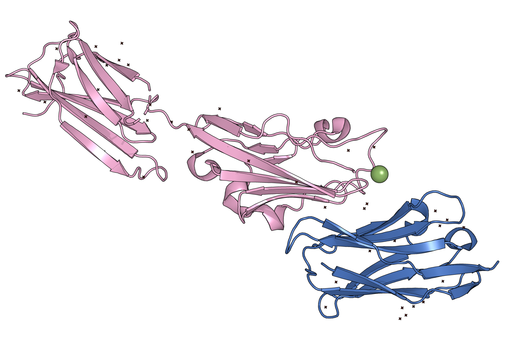
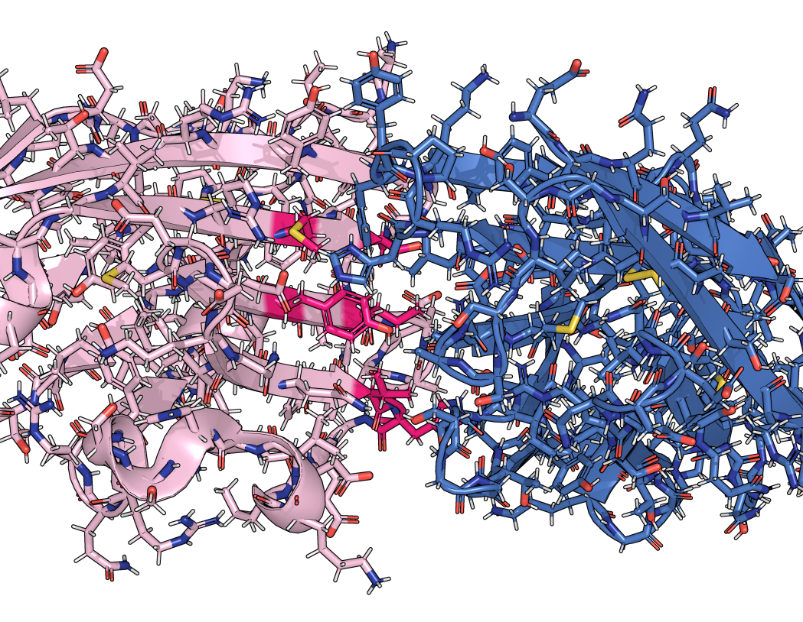
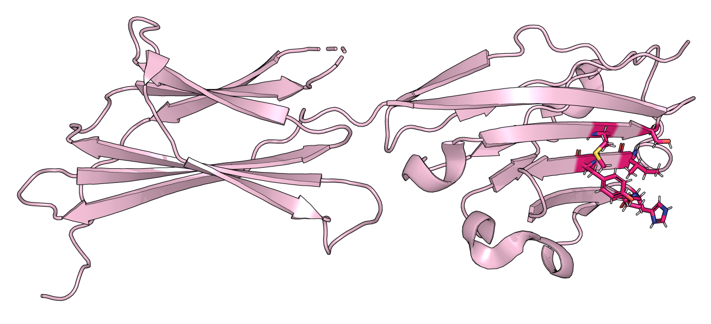
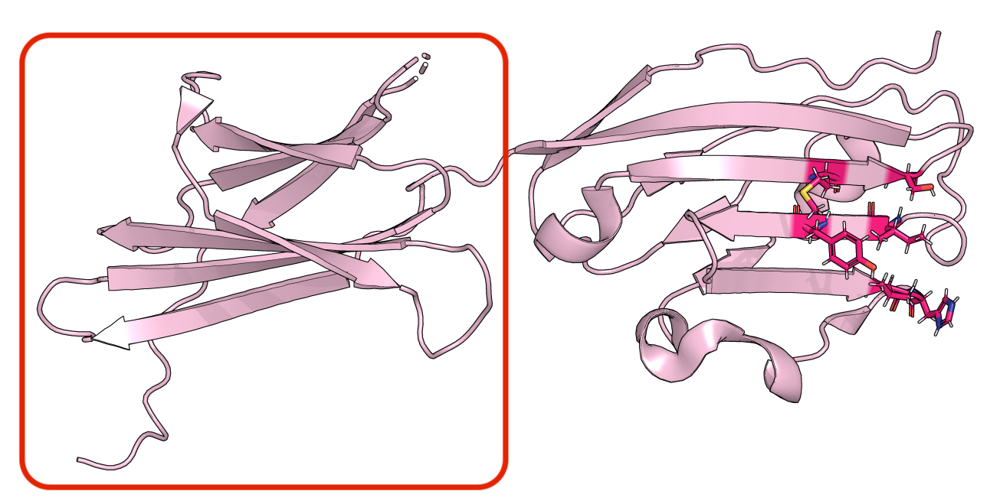
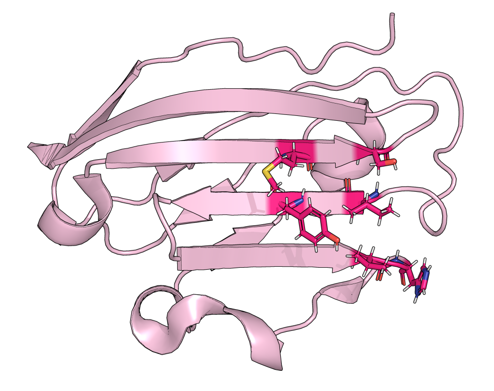
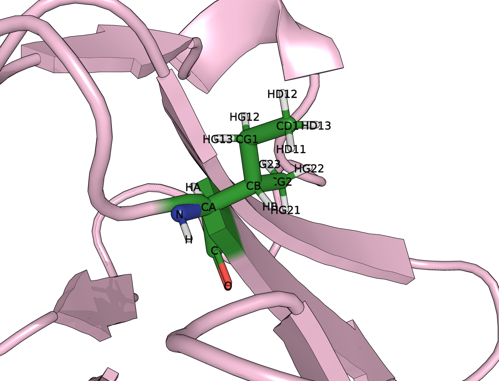
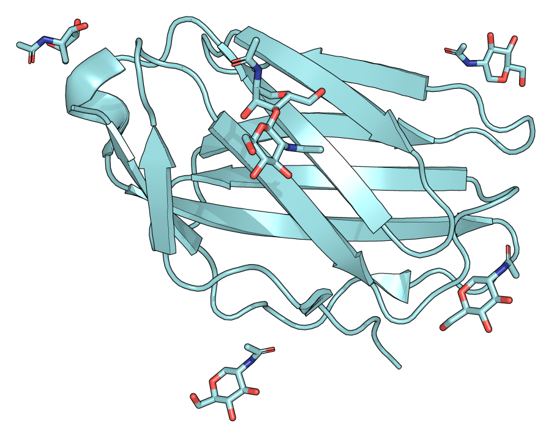
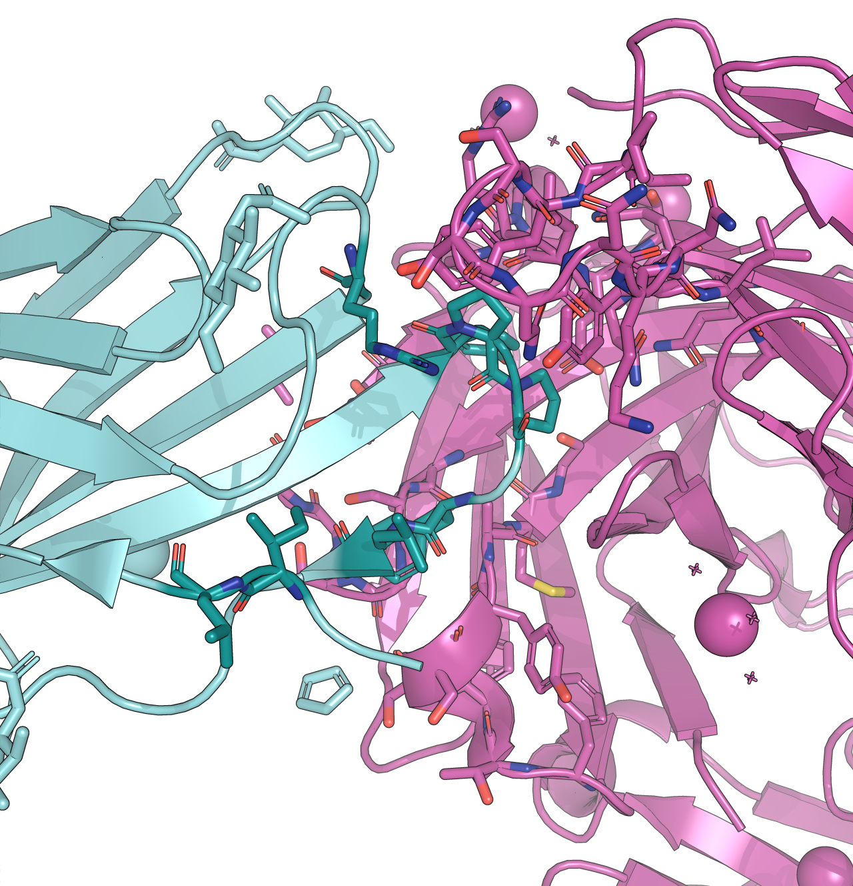
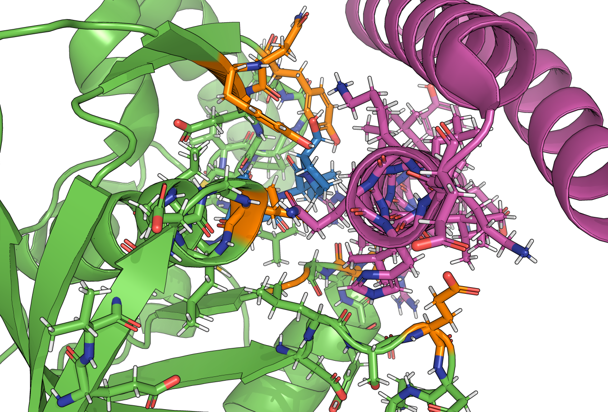
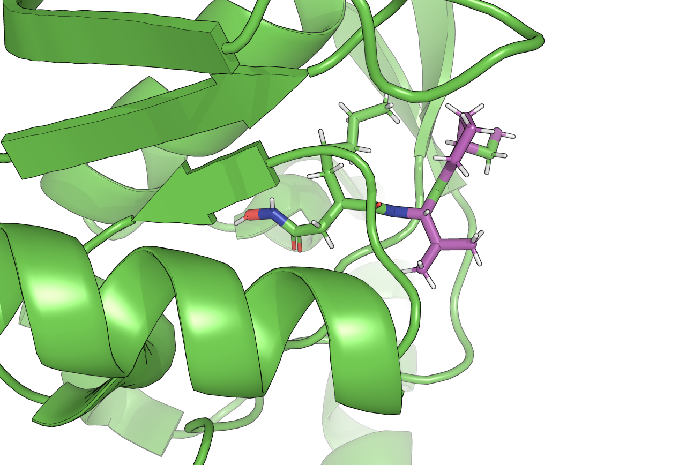

Protein and Small Molecule Binder Design with Hydrogen Bond Conditioning¶
Table of Contents¶
Introduction¶
Diffusion is a powerful tool for designing protein backbones for desired functions. RFdiffusion3 (RFD3) builds upon previous versions and introduces atom-level design–diffusing all atoms for each side-chain residue instead of only backbone residues. While (as of February 2026) the amino acid sequences generated by RFD3 do not reach the same level of sequence recovery as MPNN (thus MPNN is still recommended as a next step to redesign sequences), RFD3 generates higher quality backbones that avoid clashes with targets by modeling side chains from the start.
In this tutorial, you will learn how to design binders using RFD3 to protein targets, protein-small molecule targets, and protein targets with post-translational modifications. Starting with a target PDB, you will be able to format the input PDB (including target cropping), assign hotspots at the atom- or residue-level, write input files with different configuration options, and finally run RFD3. From the output structures generated, you can filter based on RFD3 metrics, then move on to sequence redesign with MPNN and structure prediction using tools such as RosettaFold3. You may also follow along with our companion video tutorial ().
Before We Get Started…¶
This tutorial does not cover installing RFD3. If you need to install this model, see the README or the installation tutorial for installation instructions. You will need to remember the path to the directory where you stored your checkpoint files, if you did not store them in the default location.
Note
You will need to clone the repository to access the tutorial files. Using the pip commands to install the model does not automatically download the files in the repository to your system.
Make sure you have activated any environment(s) you used to install RFD3.
RFD3 runs best on GPUs. We suggest to follow this tutorial on an interactive GPU node if you have access to one.
Input and Output Files¶
In this tutorial we will be starting with the structure 8AOM, a complex of PD-L1 with VHH1. This tutorial comes with two additional examples for binder design with RFD3, one for glycans and one for small molecule binders.
The tutorial will follow this general outline:
Preparing the PDB file to use as input to RFD3
Creating a configuration file (JSON or YAML) to guide the diffusion process
Choosing command line arguments to run RFD3
All input files and a handful of example output files for the three examples in this tutorial can be found here.
Prerequisites¶
RFD3 installed (preferably on a system with GPUs)
Familiarity with command line
Protein visualization software, the images in this tutorial were made with PyMOL
Step 1: Cleaning the Input Structure¶
Important
This tutorial will follow the convention of target as chain B, and designed binder as chain A.
In PyMOL, load the 8AOM structure. The structure obtained from the RSCB PDB will have the PDL1 protein that we want to use as our target in a complex with VHH1.
fetch 8AOM
{kind=link}

Crystal structure of 8AOM. PDL1 (pink) is in complex with VHH1 (blue) and interacting with a magnesium atom (green). The x’s denote solvent molecules.¶
This structure has non-protein elements that we do not need for our design process, let’s remove them:
remove not (bb. or sc.)
Before also removing VHH1 from our structure, let’s take a look at the residues we will use as hotspots for our design. In this case, these are the residues that will directly interact with the designed binder.
Since our starting structure shows an example of what our protein of interest (PDL1) binds to (VHH1) we can use it to determine what our hotspots should be. Here we have chosen residues A54 (isoleucine), A56 (tyrosine), A68 (valine), A69 (histidine), A115 (methionine), and A117(serine) because they make the most contacts with VHH1.
{kind=link}

Interface between PDL1 and VHH1, with chosen target hotspots residues in PDL1 colored in dark pink.¶
Now we will remove VHH1 from our structure since we are trying to design a different binder in its place. There are several ways to accomplish this, here is how to do it via the PyMOL command prompt:
remove chain V

PDL1 structure after the removal of VHH1. Hotspot residues are highlighted in dark pink.¶
Target cropping is highly encouraged so as to lower the memory used when running RFD3. This can be very target dependent, but the overall goal is to remove as many residues as possible while keeping target hotspots and overall epitope intact, and without removing parts of the structure that may introduce clashes with the designed binders later on. If any residues were unresolved in the crystal structure (grayed out in the Pymol sequence), also remove them. For PDL1, residues A132-236 were removed via:
sele to_delete, chain A and resi 132-N
remove to_delete
{kind=link}

Section of PLD1 that will be removed is surrounded by a red box.¶
Once you have your final, minimal target structure, you will need to renumber residues so that the chain starts at residue 1 and residue numbering is continuous throughout the chain. For this, select residues that need to be renumbered and run the following command in PyMOL, where ‘-17’ is used because our current structure starts its numbering at 18 and we want it to start at 1.
Note
If your chain is discontinuous after removing residues in the previous step, you may need to select segments of residues and run the renumbering command for each one.
select all
alter (sele),resi=str(int(resi)-17)
{kind=link}

Final cropped structure of PDL1.¶
Once your residues are numbered continuously starting at residue 1, change the target protein to be chain B and segment B:
alter (sele), chain='B'
alter (sele), segi='B'
Save your cropped PDB file using the command save /your/path/pdl1_cropped.pdb, but don’t close your PyMOL session. Note the new positions of your hotspots after renumbering, these will be necessary to set up our RFD3 calculation. In this example, our hotspots are now B37, B39, B51, B52, B98, and B100.
In this tutorial, we will be specifying the specific atoms we want to use in our hotspot residues. You can view the atom labels in PyMOL as shown below:
{kind=link}

Residue B37 (green) with atom labels.¶
Step 2: Setting up the Configuration File¶
RFD3 takes both YAML and JSON file formats as inputs. They are interchangeable and the information contained within them is the same, only with formatting differences. In the provided tutorial files, examples are given for both formats. In the tutorial text we will be using the YAML syntax, as it allows for comments while the JSON format does not.
The configuration file houses the settings we can use to direct the diffusion process including how long we want our designed binder to be, which residues in from our input structure we want our binder to form hydrogen bonds with, etc. We will discuss these options and more as we create the YAML file.
Open a new file called pdl1.yaml in your editor of choice. Since we are using the YAML format, our configuration file will start with the name of the design task (pdl1_binder) followed by a colon (:):
pdl1_binder:
The name of the design task only matters for how your output files are named, so just make sure to have it be something short and descriptive. Everything after this is part of this design task and will need to be indented.
Let’s add the “input” flag. This tells RFD3 where to find your input structure (pdl1_cropped.pdb).
Note
It is good practice to use the absolute path to the structure file to circumvent any errors due to where the file is located vs. where you end up running RFD3.
Important
You will need to change the path below to point to where the PDB file you are using is located on your system.
input: ./pdl1_cropped.pdb
The contig option is where you will specify both the desired length of your designed binder outputs, as well as point to the parts of the input file to be “seen” by RFD3.
Following the binder chain A, target chain B convention, the contig will be made up of three parts: first, the range of residue lengths for the designed binder; second, a “chain break” between the chain being designed and the target chains (/0); and third, a reference to the target chains present in the target input file. You can learn more about ‘contig’ strings here.
contig: 55-88,/0,B1-114
This says that we want our designed binder to be between 55 and 88 residues long followed by a chain break followed by residues B1-114 of our input structure.
The select_hotspots flag is where you will include the hotspot residue/atom information you obtained in the first step of the tutorial. These can be set at the atom level, but there are various other options that can be used here that are described in the InputSelection Mini-Language guide.
For the PDL1 example, the atom level hotspots can be set as below:
select_hotspots:
{"B37": "CB,CD1,CG1",
"B39": "CD1,CD2,CE1,CE2,CG,CZ,OH",
"B51": "CG1,CG2,CB",
"B52": "CE1,CD2,ND1,NE2,CB,CG",
"B98": "CB,CE,CG,SD",
"B100": "OG,CB"}
The select_hbond_donor and select_hbond_acceptor options are used to condition RFD3 to design binders that make hydrogen bond interactions with specified atoms. For residues in your target that are good hydrogen bond donors, use select_hbond_donor; for good acceptors, use select_hbond_acceptor. It is common to also include the same residues as hotspots, to increase contact between the binder and those residues.
The way these atoms are specified is similar to how they were specified for the select_hotspots option. However, in practice it is often best to select atoms within the residue that would actually be a part of the hydrogen bond interaction (instead of specifying TIP, for example.)
select_hbond_donor:
{"B39": "OH",
"B52": "ND1,NE2"}
In RFD3, you can specify the point at which the center of mass of your designed protein should be located. This position is referred to as an ‘ORI token’. For design tasks with hotspots, it is typical to use the hotspots to determine this point:
infer_ori_strategy: hotspots
To be extra certain that RFD3 will not change the identity of any of the residues in the motif - what RFD3 takes from the provided input structure - let’s add redesign_motif_sidechains to our YAML file:
redesign_motif_sidechains: False
Last, but not least, we want our designs to have fewer loopy regions and more defined secondary structure motifs. We can push RFD3 to do this via:
is_non_loopy: True
There are many other options that you can use to further specify the designs you want to create. Some of these are described in the two additional examples, but even more are described here. We encourage you to explore these options for your own design projects.
Step 3: Running RFD3¶
Now that we have our cropped PDB file and our input options specified in a YAML file, we can run RFD3 to generate binder designs. There are many command line arguments that you can use to control how RFD3 runs, which are described here. However, we will focus only on the options that are more frequently used for binder design in this tutorial.
Important
You may need to update the input file paths and output directory (discussed below) depending on where your input files are located and where you want your output files relative to where you run RFD3.
For the PDL1 example, we can run RFD3 with this command:
rfd3 design \
out_dir="./pdl1_binder_outputs" \
inputs="./pdl1.yaml" \
n_batches=1 \
diffusion_batch_size=8 \
dump_trajectories=True
You can either run this from the command line prompt in an interactive session on a GPU node or submit the job to the computing resources you have access to. For an example runscript for submitting these jobs, see the PDL1 runscript example. Note that the options shown in this runscript might not match the options you have access to.
Let’s break this down:
rfd3 design: This is the main command that actually runs RFD3out_dir: This is a required argument that specifies the relative path to where you want your outputs stored. If the directory does not already exist, RFD3 will create it. In this example our outputs will be saved in a directory calledpdl1_binder_outputsthat will be created in your current working directory.inputs: This is the relative path and file name for your input YAML or JSON file. The command above assumes that the YAML file we created for the PDL1 example is in your current working directory.n_batches: RFD3 will run your designs in batches. The higher the number of batches, the more diversity your designs will have. Note that all designs in a single batch will have the same length.diffusion_batch_size: The number of designs in each batch. Larger batch sizes are more efficient, but your results will be less diverse than generating the same total number of designs with smaller batches.dump_trajectories: IfTrue, then the trajectories created during the RFD3 design process are saved. These are not necessary for the assessment of your designs, but can be useful for visualization purposes. In general, we recommend leaving this set to the default value ofFalsebecause the trajectory file sizes can be large.
After RFD3 runs, 4 types of files should be generated: (In the list below ‘n’ can be 0 through 7, there should be one of each file for each RFD3 designed binder.)
pdl1_test_0_denoised_model_n.cif.gz: This trajectory files shows what the diffusion network thinks the final clean structure will be at each timestep. The input motif is not held fixed in this view. Can be used to see what the model ‘learned’ at each step as it is easier to watch the secondary structure emerge during the diffusion process.
pdl1_test_0_noisy_model_n.cif.gz: A trajectory that shows how the diffusion process actually progressed while the input motifs are held fixed. Can be used to verify motif integrity.
pdl1_test_0_model_n.cif.gz: This file contains the final binder structure generated by RFD3 along with any portions of the input structure that were specified by the configuration file.
pdl1_test_0_model_n.json: A JSON file with information about the design including metrics and a map between the input structure and the output structure, when applicable.
What’s Next?¶
We recommend that you visually inspect your designs along with taking a look at the metrics in the generated JSON file to filter your designs before moving on to the next step of your design pipeline, such as sequence design with MPNN.
Keep in mind that while we only generate 8 designs in this tutorial, for real design projects you will likely want to generate hundreds or thousands of designs and then filter them based on your design parameters.
Additional Examples¶
The additional examples explored in the next few sections follow the same process discussed in the tutorial, with minor exceptions and changes. In the text for these examples we will mostly highlight how these examples differ from the PDL1 example discussed in the main body of the tutorial and why.
The input files for these examples along with example output files can be found here.
Binder Design with Explicitly Modeled Glycans¶
For this example we will start with the 8S6Z structure which is composed of CD28 in complex with antibody Fab fragment AI3. This will allow us to explore binder design in RFD3 for a protein target with explicitly modeled glycans.
Step 1: Cleaning the Input Structure¶
You can follow the same procedure as described in Step 1 of the tutorial with a few changes:
Load the 8S6Z structure into PyMOL using
fetch 8S6ZWe want to keep the explicitly modeled glycans, which would be removed if we ran
remove not (bb. or sc.). Instead run:remove solvent remove resn ZN
These will remove any solvent molecules and the zinc ions, in that order.
The 8S6Z structure has two copies of CD28, chains C and F. Either can be used for this example, but to match the provided tutorial files, you will need to keep only chain C. You can remove the remaining chains via
remove chain A remove chain B remove chain D remove chain E remove chain F
The non-protein molecules that are part of each chain will also be removed.
The glycan molecules we want to keep are labeled as NAG, any other molecules can be removed:
remove resn GOL remove resn IMD
Remove any unresolved atoms.
Now relabel the chains as discussed in the main text of the tutorial so that CD28 comprises chain B and each glycan molecule is in its own chain. Make sure to renumber the chains so they begin at residue 1.
# manually select a glycan molecule alter sele, chain='C' alter sele, segi='C' alter sele, resi=1
Keep in mind that two of the glycans are connected, so keep these in the same chain. (To match the example YAML file below, these should be in chain G.)
Note
You could have put all the glycan molecules in the same chain, but putting them in individual chains gives more flexibility if you want to include only a subset of these molecules in future design tasks.
Save your cleaned structure.
Your final structure should match the one in the provided tutorial files.
{kind=link}

Final cleaned CD28 structure with glycan molecules.¶
Step 2: Setting up the configuration file¶
Here are the settings we will use for the design of the binder for CD28:
test:
input: ./cd28_nag.pdb
contig: 55-88,/0,B1-118,C1-1,D1-1,E1-1,F1-1,G1-2
redesign_motif_sidechains: False
infer_ori_strategy: hotspots
is_non_loopy: True
select_hotspots:
{"B4": "CB,CD1,CD2,CG",
"B3": "CG1,CG2,CD1,CB",
"B105": "CB,CD1,CD2,CG",
"B104": "CD1,CD2,CE1,CE2,CB,CZ,OH",
"B100": "CD1,CD2,CE1,CE2,CB,CZ,OH",
"B102": "CB,CD,CG,N",
"B101": "CB,CD,CG,N",
"B31": "CB,CD,CG,CZ,NH1,NH2,NE"}
select_hbond_donor:
{"B100": "OH",
"B104": "OH",
"B31": "NH1,NH2,NE"}
These settings specify that we want to design a binder that is 55-88 residues long around our input structure. Notice that the glycans were included in our ‘contig string’ to ensure that they were visible to RFD3. RFD3 knows to avoid clashing with these molecules when creating binder designs.
Atoms on three residues (B31, B100, B104) have been chosen to act as hydrogen bond donors to residues on the designed binder. The hotspots were once again chosen by observing which residues had side chains that seemed to interact with the antibody fragment:
{kind=link}

Interface between CD28 (blue) and the antibody fragment (pink). The chosen hotspots are in a darker teal color and are shown as sticks. The antibody residues close to CD28 are rendered as sticks as well to better see the interactions.¶
Note
Fore more details on these settings, see the main text of the tutorial.
Step 3: Running RFD3¶
You can run RFD3 to design this binder in the same way that was shown in the main example. Just make sure to change your output directory:
rfd3 design \
out_dir="./cd28_nag_binder_outputs" \
inputs="./cd28.yaml" \
n_batches=1 \
diffusion_batch_size=8 \
dump_trajectories=True
Small Molecule Binder Design¶
For this example we will start with the 8S1X structure which is composed of PDF1 bound to actinonin (BB2) with a designed protein binder (DBAct553). This structure will allow us to explore binder design with RFD3 in the presence of small molecules.
Step 1: Cleaning the Input Structure¶
You can follow the same procedure as described in Step 1 of the tutorial with a few changes:
Fetch the starting structure (
fetch 8S1X)Remove any pieces of the structure that are not proteins or the actinonin ligand:
remove solvent remove resn PO4 remove resn FMT remove resn ZN remove resn K
Remove any unresolved residues
Before removing the designed binder (chain B) take a look at the residues at the interface between the designed binder and PDF1, this will help us determine our hotspots for this example.

DBAct553 (the designed binder) is shown in pink, PDF1 is shown in green, and actinonin (BB2) is shown in blue. Residues near the interface are shown as sticks. The chosen hotspot residues are shown in orange.¶
The hotspots were chosen based on which residues at the interface appear to be interacting with DBAct553.
Remove the designed binder (
remove chain B)Relabel the remaining portions of the structure so that the protein is in chain B with residue numbering starting at 1 and the small molecule is the first residue of chain C:
# select chain A alter sele, chain='B' alter sele, segi='B' alter sele, resi=str(int(resi)-1) # select the small molecule alter sele, chain='C' alter sele, segi='C' alter sele, resi='1'
Save your cleaned PDB, in the provided tutorial files this structure is saved as
pdf1_sm.pdb.
Note
We did not crop the structure in this example because it was already small enough to use for our design tasks.
Step 2: Setting up the configuration file¶
Here are the settings we will use for the design of the binder for PDF1:
test:
input: ./pdf1_sm.pdb
contig: 55-88,/0,B1-167,C1-1
redesign_motif_sidechains: False
infer_ori_strategy: hotspots
is_non_loopy: True
select_hotspots: {
"B64": "OE1,OE2,CD,CB,CG",
"B126": "CB,CD1,CD2,CG",
"B87": "CD1,CD2,CE1,CE2,CB,CZ,OH",
"B98": "CD1,CD2,CE1,CE2,CB,CZ,OH",
"B88": "CB,CG,OE1,NE2",
"B42": "CB,CD,CG,N",
"B44": "CB,CD1,CG1,CG2",
"C1": "C15,C16,C17,C18,O20,N21,C22,C23,C24,C25,O27"}
select_hbond_donor: {
"B87": "OH",
"B98": "OH",
"B64": "OE1,OE2",
"B42": "N",
"C1": "O20,N21,O27"}
These settings specify that we want to design a binder that is 55-88 residues long around our input structure. Notice that we’ve included both the protein and the small molecule in our ‘contig string’. This allows RFD3 to design binders that avoid clashes and interact with the small molecule.
The choice of residues to use as hotspots was discussed in Step 1. The specific atoms on these residues selected as hotspots were the ones most external to the protein structure. This is also true of the hotspot atoms chosen on the small molecule, the atoms chosen are the least buried in the protein structure:
{kind=link}

The actinonin atoms selected as hotspots are highlighted in pink. Note the atoms selected are not buried in the protein structure.¶
Atoms on four residues (B42, B64, B87, B98) along with three polar atoms on the small molecule have been chosen to act as hydrogen bond donors to residues on the designed binder.
Note
Fore more details on these settings, see the main text of the tutorial.
Step 3: Running RFD3¶
You can run RFD3 to design this binder in the same way that was shown in the main example. Just make sure to change your output directory:
rfd3 design \
out_dir="./pdf1_sm_binder_outputs" \
inputs="./pdf1.yaml" \
n_batches=1 \
diffusion_batch_size=8 \
dump_trajectories=True
Glossary¶
Hotspot¶
A hotspot is a residue that is part of the interface between the given and designed portions of the final structure.
Motif¶
A ‘motif’ in the context of protein design is a defined structural or functional unit that we want to preserve in our designs. For RFD3, specifically, a motif is the input structure (or a portion of the input structure) that we specify in our contig string so that RFD3 can design around it.
ORI token¶
An ORI token, short for ‘origin’ token, is the location of where you want the center of mass of the designed structure of your protein to be.
Resources and References¶
RFD3 preprint: https://www.biorxiv.org/content/10.1101/2025.09.18.676967v2
RFD3 Foundry documentation: https://github.com/RosettaCommons/foundry/blob/production/models/rfd3/README.md
MPNN Foundry documentation: https://github.com/RosettaCommons/foundry/blob/production/models/mpnn/README.md
RF3 foundry documentation: https://github.com/RosettaCommons/foundry/blob/production/models/rf3/README.md
References for diffusion models and RFdiffusion:
What are diffusion models? https://www.ibm.com/think/topics/diffusion-models
De novo design of protein structure and function with RFdiffusion https://www.nature.com/articles/s41586-023-06415-8
Atom-level enzyme active site scaffolding using RFdiffusion2 https://www.nature.com/articles/s41592-025-02975-x
De novo design of phospho-tyrosine peptide binders https://www.biorxiv.org/content/10.1101/2025.09.29.678898v1
References for protein structure prediction and interaction metrics:
Highly accurate protein structure prediction with AlphaFold https://www.nature.com/articles/s41586-021-03819-2
Accurate structure prediction of biomolecular interactions with AlphaFold 3 https://www.nature.com/articles/s41586-024-07487-w
Accelerating Biomolecular Modeling with AtomWorks and RF3 https://www.biorxiv.org/content/10.1101/2025.08.14.670328v2
PAE: A measure of global confidence in AlphaFold2 predictions https://www.ebi.ac.uk/training/online/courses/alphafold/inputs-and-outputs/evaluating-alphafolds-predicted-structures-using-confidence-scores/pae-a-measure-of-global-confidence-in-alphafold-predictions/
Predicting Experimental Success in De Novo Binder Design: A Meta-Analysis of 3,766 Experimentally Characterised Binders https://www.biorxiv.org/content/10.1101/2025.08.14.670059v1.full